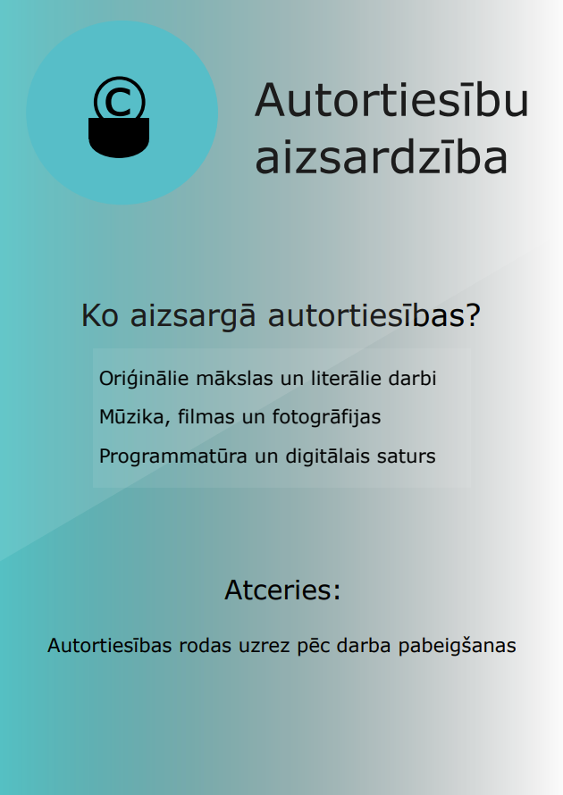
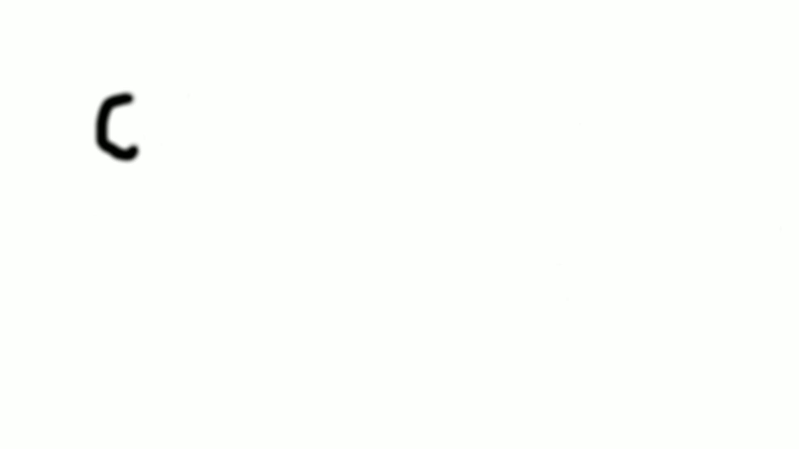

Autortiesību aizsardzība
Autortiesības aizsargā radoša darba autors. Tas nozīmē, ka jebkurš attēls, teksts vai mūzika, pieder kādam citam, un mēs to nedrīkstam izmantot bez atļaujas vai atsauces.

Kā pareizi izmantot citu darbus?
Lai neprogrammētu svešu darbu aizsardzību, ieteicams izmantot materiālus ar Creative Commons licenci vai arī vienmēr norādīt darba autoru un saiti uz oriģinālu.
